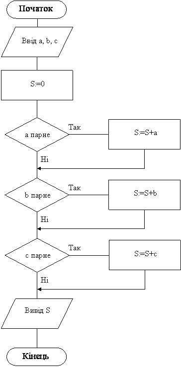

Назад
Зміст
Вперед
Задачі на знаходження суми, добутку, кількості
Знаходження суми
| s:=0; початкове значення |
| s:=s+a; де а будь-які числа |
Знаходження добутку
| p:=1; початкове значення |
| p:=p*a; де а будь-які числа |
Знаходження кількості
| k:=0; початкове значення |
| k:=k+1; збільшення лічильника |
У цих формулах перший оператор присвоювання (початкове значення) виконується один раз, другий оператор виконується декілька разів, при цьому число а кожний раз інше.
Приклад 1
Дано три будь-яких цілих числа. Знайти суму парних.
Дано: три будь-яких цілих числа
Знайти: суму тих, що парні
Змінні:
Вхідні:
- a – перше число
- b – друге число
- c – третє число
Вихідні:
Всі дані цілого типу, тому що перевіряється парність, за допомогою операцій цілочисельного ділення.
Алгоритм
- Ввід чисел a,b,c
- Встановлення начального значення суми s:=0
- Перевіряємо кожне число на парність:
- Якщо a парне, то додаємо його до суми s:=s+a
- Якщо b парне, то додаємо його до суми s:=s+b;
- Якщо c парне, то додаємо його до суми s:=s+c;
- Чисел 3, отже потрібно 3 перевірки, 3 неповних умовних оператора
- Вивід s на екран.
Програма
Var a,b,c,s:integer;
begin
read(a,b,c); s:=0;
if a mod 2=0 then s:=s+a;
if b mod 2=0 then s:=s+b;
if c mod 2=0 then s:=s+c;
writeln(s);
end.
|
Блок-схема програми

Приклад 2
Дано три будь-яких дійсних числа. Знайти добуток тих, що належать інтервалу [-10,10].
Дано: три будь-яких дійсних числа
Знайти:
добуток тих, що більші -10, та менші 10.
Змінні:
Вхідні:
- a – перше число
- b – друге число
- c – третє число
Вихідні:
Всі дані дійсного типу
Алгоритм
- Ввід чисел a,b,c
- Встановлення начального значення добутку p:=1
- Перевіряємо кожне число на входження в інтервал:
- Якщо -10<=a<=10, то помножаємо його на добуток p:= p*a
- Якщо -10<=b<=10, то помножаємо його на добуток p:= p*b;
- Якщо -10<=c<=10, то помножаємо його на добуток p:= p*c;
- Чисел 3, отже потрібно 3 перевірки, 3 неповних умовних оператора
- Вивід p на екран.
Програма
Var a,b,c,p:real;
begin
read(a,b,c); p:=1;
if (a>=-10)and(a<=10) then p:=p*a;
if (b>=-10)and(b<=10) then p:=p*b;
if (c>=-10)and(c<=10) then p:=p*c;
writeln(p:1:1);
end.
|
Приклад 3
Дано три будь-яких дійсних числа. Знайти кількість від’ємних.
Дано: три будь-яких дійсних числа
Знайти:
кількість від’ємних.
Змінні:
Вхідні:
- a – перше число
- b – друге число
- c – третє число
Вихідні:
Всі вхідні дані дійсного типу, кількість завжди цілого типу.
Алгоритм
- Ввід чисел a,b,c
- Встановлення начального значення кількості k:=0;
- Перевіряємо кожне число на від’ємність:
- Якщо a<0, то збільшуємо лічильник на 1, виконуємо оператор k:=k+1;
- Якщо b<0, то збільшуємо лічильник на 1, виконуємо оператор k:=k+1;
- Якщо c<0, то збільшуємо лічильник на 1, виконуємо оператор k:=k+1;
- Чисел 3, отже потрібно 3 перевірки, 3 неповних умовних оператора
- Вивід k на екран.
Програма
Var a,b,c:real; k:integer;
begin
read(a,b,c); k:=0;
if a<0 then k:=k+1;
if b<0 then k:=k+1;
if c<0 then k:=k+1;
writeln(k);
end.
|
Варіанти задач
- Дано три будь-яких дійсних числа. Знайти суму додатних.
- Дано три будь-яких цілих числа. Знайти добуток тих, що кратні 3.
- Дано три будь-яких дійсних числа. Знайти кількість тих, що належать інтервалу [-2, 20].
- Дано три будь-яких дійсних числа. Знайти добуток тих, що належать інтервалу [3, 13].
- Дано три будь-яких цілих числа. Знайти суму тих, діляться на 5.
- Дано три будь-яких цілих числа. Знайти кількість тих, що закінчуються цифрою 6.
- Дано три цілих числа. Знайти добуток тих, що закінчуються цифрою 9.
- Дано три будь-яких дійсних числа. Знайти суму тих, що належать інтервалу [-6, 6].
- Дано три будь-яких цілих числа. Знайти кількість тих, діляться на 10.
- Дано три будь-яких цілих числа. Знайти добуток додатних парних чисел.
- Дано чотири будь-яких цілих числа. Знайти суму тих, що кратні 7 та закінчуються на 1.
- Дано три будь-яких дійсних числа. Знайти кількість тих, що більше 70.
- Дано три будь-яких цілих числа. Знайти добуток непарних, що менші за 10.
- Дано чотири будь-яких дійсних числа. Знайти суму додатних, що менші за 100.
- Дано ціле трьохзначне число. Знайдіть у ньому кількість цифр 1.
- Дано три цілих числа. Знайти добуток тих, що кратні своїй останній цифрі.
Назад
Зміст
Вперед